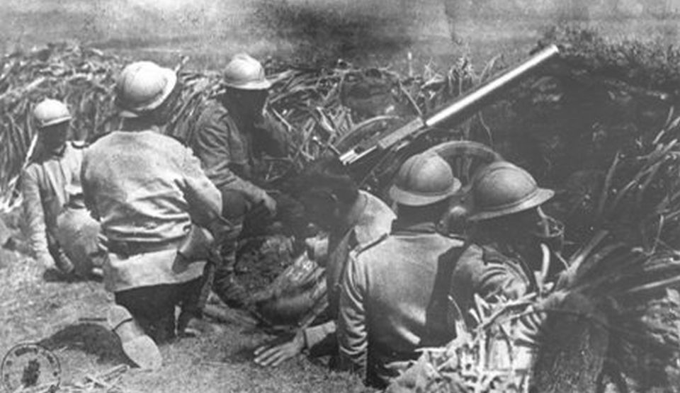
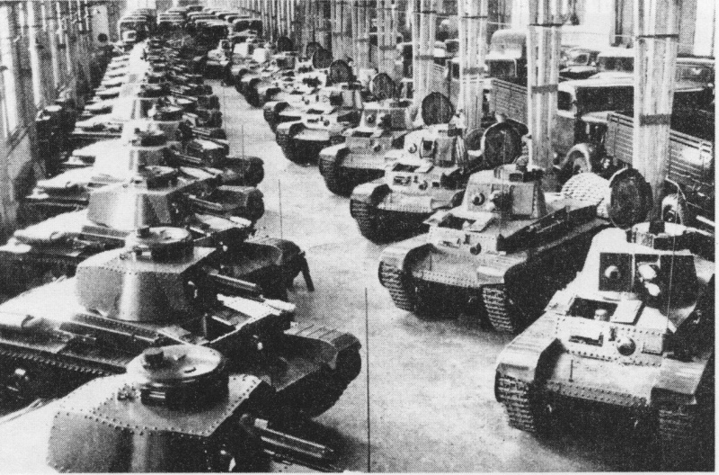
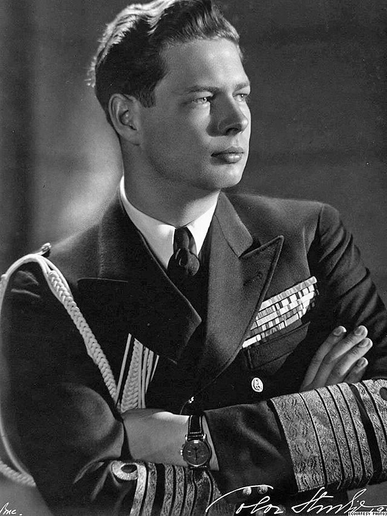
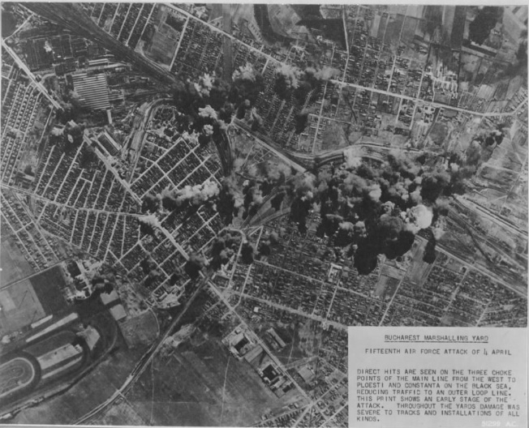
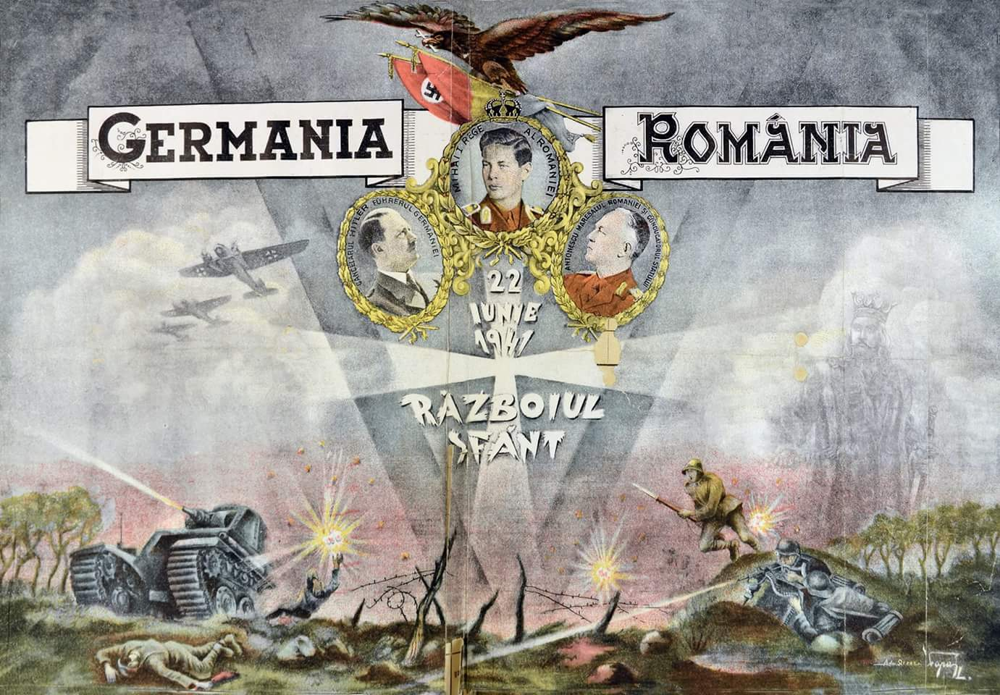

Soldați români în timpul campaniei din Est (1941-1944).

Tancuri românești folosite în lupta împotriva Uniunii Sovietice.

Regele Mihai I, o figură esențială în schimbarea cursului războiului în România.

Bombardamente asupra capitalei București în 1944, în timpul ofensivei sovietice.

Afiș de propagandă din perioada războiului, subliniind mobilizarea națională pentru Apărarea Patriei.